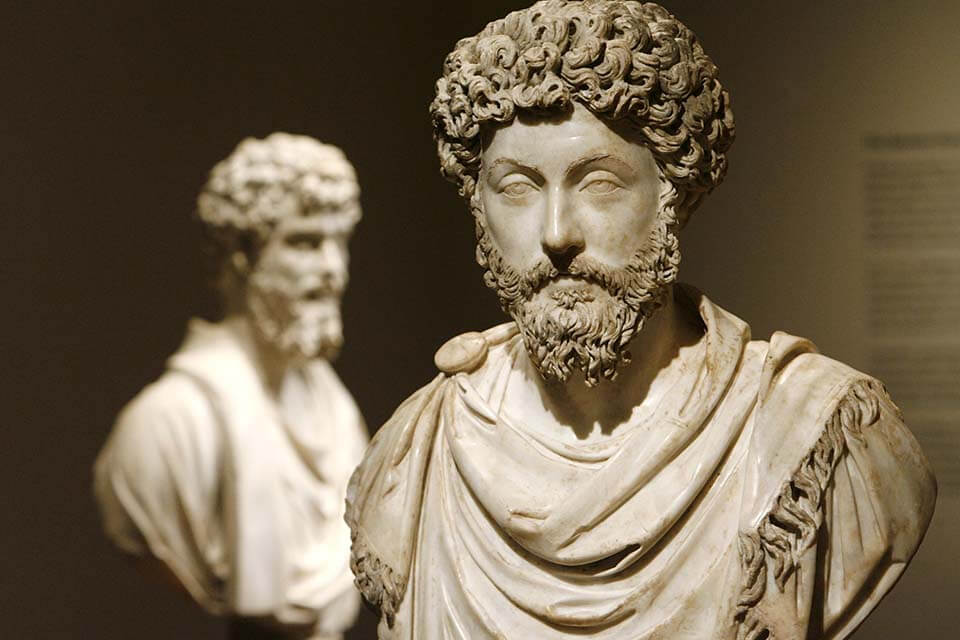

Estoicismo

A principios del 2019 conocí la filosofía estoica, en ella encontré principios muy relevantes para nuestros tiempos actuales.
En el 2020 se dio a conocer aún más debido a la pandemia del covid, porque justamente el estoicismo nos habla entre otras cosas de llevar un correcto control de nuestras emociones.
Es importante destacar que el estoico no anula las emociones sino que las identifica, entiende y las gestiona.
Qué es estoicismo?
Es una escuela fundada por Zenón de Citio en el 301 a.C. Se basa en el dominio de las pasiones que perturban la vida valiéndose de la virtud y la razón. Su objetivo es alcanzar la felicidad y la sabiduría prescindiendo de los bienes materiales, las comodidades excesivas y el azar.
El ideal de los estoicos es lograr la imperturbabilidad e independencia ante los acontecimientos externos.
El filósofo moderno y escritor Nassim Taleb define a un estoico como:
“alguien que transforma el miedo en prudencia, el dolor en transformación, los errores en iniciación y el deseo en una misión.”
Mis máximas del estoicismo
- Memento Mori - Recuerda que morirás.
- Aquí y ahora - Tomar conciencia del momento presente y no dejarlo escapar
- Gratitud - Permite tener perspectiva de lo que tenemos.
- Dicotomía del Control - Diferenciar lo que esta en nuestro control y lo que esta fuera de nuestro control
- Amor Fati - Aceptar lo que te ocurre con una actitud positiva independientemente de que sea bueno o malo.
Mis cita preferida
"Los hombres se ven perturbados no por las cosas, sino por las opiniones sobre las cosas. Como la muerte, que no es nada terrible, pues entonces también se lo habría parecido a Sócrates sino que la opinión sobre la muerte, la de que es algo terrible. Así que cuando suframos impedimentos o nos veamos perturbados o nos entristezcamos, no echemos nunca la culpa a otro, sino a nosotros mismos, es decir, a nuestras opiniones". Manual 5 - Epicteto.
Representantes del estoicismo
- Zenón de Citio
- Séneca
- Epicteto
- Marco Aurelio
- Tim Ferris
- Massimo Pigliucci